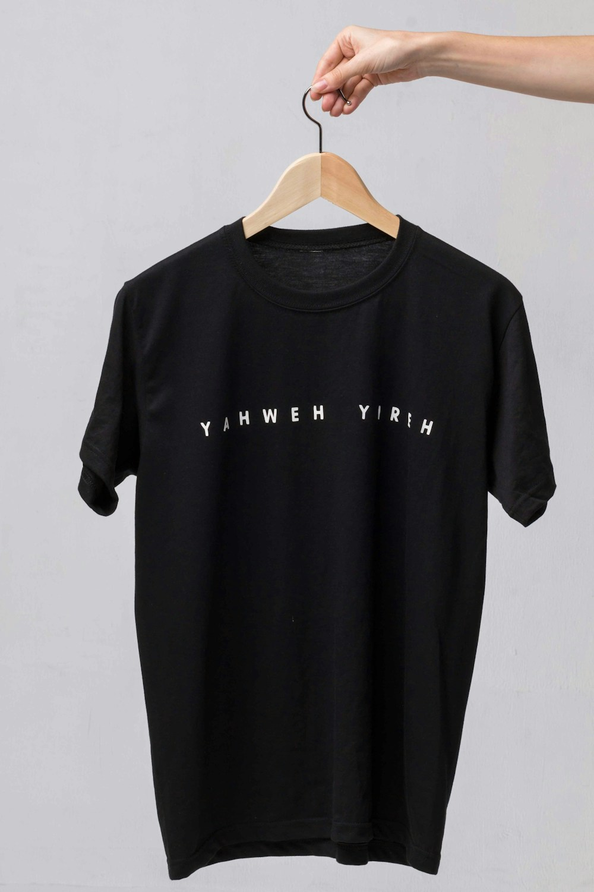

In haute couture loungewear and bespoke boudoir tailoring, no textile commands the reverence of pure Mulberry silk. When draped over the human form, silk does not behave like ordinary woven fabrics; it moves with a fluid, liquid grace that seems to defy gravity. It cascades in soft sculptural folds, mirrors ambient light with a deep pearlescent luminescence, and imparts an immediate sensation of cool, weightless serenity upon contact with the skin.
At Gloss Robe Peak, our entire design philosophy centers upon The Physics of 22-Momme Mulberry Silk Satin. By sourcing exclusively Grade 6A continuous long-filament silk reeled from the cocoons of Bombyx mori silkworms nourished on organic white mulberry leaves, we achieve a fabric density of exactly 94.7 grams per square meter. In this masterclass, our sericulture scientists and couturiers explore the microscopic geometry, optical physics, and mechanical drape of luxury silk.
1. The Momme Unit: Measuring True Silk Density and Quality
Unlike cotton or wool which are measured in thread counts or grams per meter, silk uses the traditional Japanese unit of Momme (pronounced moe-mee, abbreviated mm):
- The Imperial Definition: One momme equals the weight in pounds of a piece of silk fabric measuring 100 yards long by 45 inches wide. One momme equals approximately 4.340 grams per square meter.
- Lightweight Silk (12–16 Momme): Thin, delicate, and often semi-sheer (such as habotai or chiffon). While soft, it lacks structural durability and is prone to seam slippage under tension.
- The 22-Momme Luxury Sweet Spot: At 22 momme (94.7 g/m²), silk achieves its perfect balance: completely opaque, highly resistant to tear stress, yet preserving sublime liquid fluidity and soft drape.
- Heavyweight Silk (25–30 Momme): Dense and structured (often used for upholstery or winter kimonos), but sacrificing effortless bedroom lightness.
“Silk is nature’s liquid prism. It does not reflect light like a mirror; it refracts light within its crystalline protein core, creating an inner pearl glow.”
2. Triangular Prism Geometry and Optical Refraction Kinetics
The luminous sheen of Mulberry silk is a triumph of biological optics:
- Triangular Cross-Section: Under electron microscopy, an individual silk fibroin filament displays a smooth triangular prism cross-section with rounded corners.
- Multifaceted Internal Refraction: Unlike cylindrical cotton or synthetic fibers that reflect light uniformly off outer surfaces, triangular silk prisms refract incoming light rays internally at different angles, separating wavelengths and casting a soft, multi-tonal pearlescent glow.
- Grade 6A Unbroken Filament Length: A single healthy cocoon yields an unbroken silk filament exceeding 1,200 meters in length, eliminating short staple ends that cause surface fuzz and dullness.
3. Sateen Weave Architecture and Liquid Drape Coefficient
The mechanical fluidity of our dressing robes is engineered through weaving geometry:
Our silk satin uses a 5-end sateen weave structure, where warp yarns float across four weft yarns before interlacing. This long float structure minimizes surface friction, allowing the fabric to glide smoothly over bodily curves with an exceptionally low bending rigidity coefficient.
4. Silk Momme Weight & Textile Specification Matrix
| Silk Density & Grade | Metric Weight (g/m²) | Drape Fluidity & Opacity | Ideal Couture Application |
|---|---|---|---|
| 22-Momme Grade 6A Satin | 94.7 g / m² (Optimal Density) | ★★★★★ (100% Opaque Liquid Drape) | Bespoke Dressing Gowns & Luxury Robes |
| 16-Momme Habotai / Crepe | 68.9 g / m² (Lightweight) | ★★★☆☆ (Semi-Sheer / Light Float) | Garment Linings & Summer Scarves |
| Polyester "Synthetic Satin" | 110.0 g / m² (Petroleum Plastic) | ★☆☆☆☆ (Stiff, Static Cling, Traps Heat) | Fast-Fashion Robes (Avoided by Atelier) |
5. Bias Grainline Cutting for Unrestricted Movement
In our Manhattan atelier at 181 Mercer Street, every robe panel is cut at a precise forty-five-degree diagonal angle to the fabric weave (true bias). Cutting on the bias unlocks natural elastic stretch across the silk, allowing our robes to contour gently to the silhouette without restrictive waist seams.
6. Natural Skin Hydration and Sericin Protein Harmony
Unlike absorbent cotton that pulls natural oils and moisture out of your skin overnight, silk is composed of eighteen natural amino acids structurally identical to human skin proteins. Sleeping or lounging in pure silk preserves epidermal hydration, reducing skin friction and sleep creases.
7. Zero Static Cling and Thermal Comfort
Because silk possesses a natural moisture regain of eleven percent, it does not generate static electricity or cling uncomfortably to the body, ensuring effortless gliding motion across silk bedsheets and boudoir seating.
8. The Ultimate Expression of Private Luxury
Enveloping yourself in a 22-momme Mulberry silk dressing gown from Gloss Robe Peak is an extraordinary sensory experience—calm, sensual, and impeccably tailored to elevate every quiet moment of your daily routine.
9. Tensile Elongation and Molecular Recovery of Fibroin
Silk fibroin protein chains feature antiparallel beta-pleated crystalline sheets alternating with amorphous elastic segments. This molecular architecture allows the silk fiber to stretch up to twenty percent under tension before snapping, springing back to its original length without permanent bagging.
10. Organic White Mulberry Leaf Cultivation in Sericulture
Our silkworms feed exclusively on pesticide-free white mulberry leaves (Morus alba). This pure, unpolluted organic diet yields immaculate white cocoons containing high-purity fibroin filaments free from yellowing impurities or coarse mineral deposits.
11. An Eternal Covenant of Haute Couture Silk Mastery
At Gloss Robe Peak, our dedication to silk textile physics represents the highest pinnacle of luxury loungewear, combining ancient sericulture wisdom with refined Manhattan tailoring to create dressing gowns of timeless beauty.
12. Triangular Prism Refraction Across 22-Momme Weaves
The triangular geometry of Mulberry silk fibroin filaments refracts ambient light internally at varying angles, creating a soft, multi-dimensional pearlescent glow that deepens with movement across private boudoir lighting.
13. High-Tenacity Filament Reeling from Organic Cocoons
Reeling unbroken silk filaments measuring over 1,200 meters from Grade 6A Bombyx mori cocoons guarantees uniform thread diameter, preventing surface pilling, slubs, and fiber breakage over decades of wear.
14. The Sensual Serenity of Liquid Silk Satin
Wrapped in 22-momme Mulberry silk satin, the body experiences a weightless, soothing embrace that calms the nervous system and transforms everyday loungewear into an extraordinary sensory indulgence.
15. The Sovereign Standard of Sericulture Physics
At Gloss Robe Peak, our mastery of silk momme density and filament optics represents the pinnacle of luxury loungewear, crafting dressing robes that move with the effortless grace of liquid water.
16. Bending Rigidity and Low-Friction Surface Gliding
Standardized Kawabata textile testing confirms that our 22-momme silk satin exhibits an exceptionally low bending hysteresis coefficient, allowing the fabric to drape smoothly over bodily contours with zero stiffness.
17. An Enduring Masterpiece of Natural Protein Engineering
By uniting the biological genius of continuous Mulberry silk filaments with master bias tailoring, Gloss Robe Peak crafts dressing gowns that stand as eternal monuments to personal elegance and private luxury.
Frequently Asked Questions on Silk Momme Physics

Madame Genevieve Laurent
Director of Silk Sericulture at Gloss Robe Peak. Genevieve trained in Lyon and Kyoto, specializing in 22-momme Mulberry silk satin weaving and couture boudoir design.